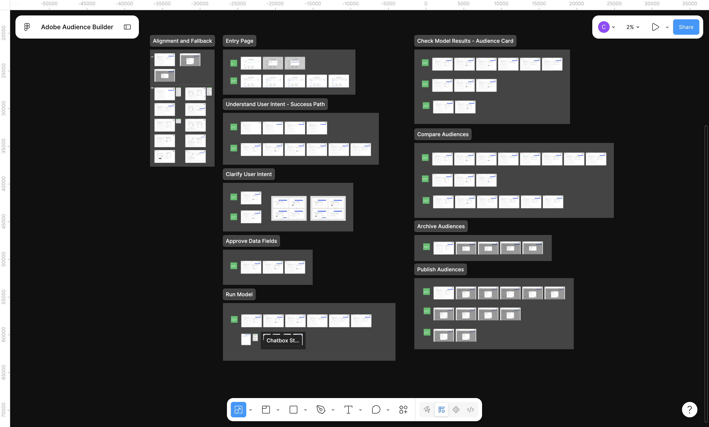
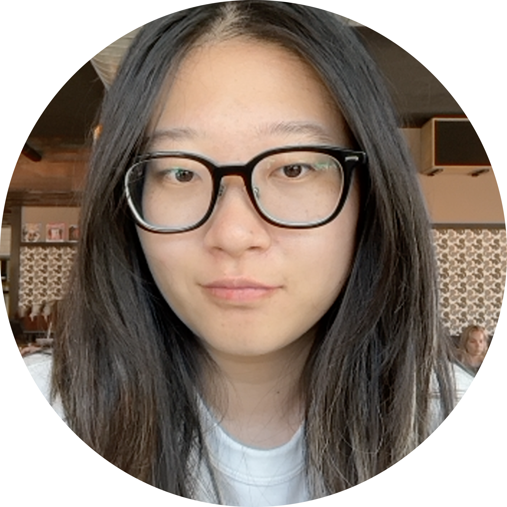
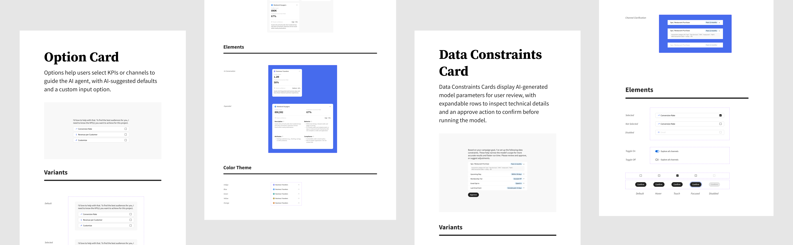

Design Handoff
Design file organized by workflows, plus a Loom video
Like most designers, my own design file is, of course, a collage of all the iterations and discarded ideas. But I always tidy up the work that's ready to ship into a separate file for developers, for clarity. And I always find that attaching an async video first saves a lot of meeting time.


Contribute to the Adobe Spectrum design system
All UI is designed with Adobe Spectrum's tokens, including color, typography, spacing, and grid. For new UI elements I created for this project, I built them as reusable components and templates for scalability.

Take Away
Sixian Chen · 1st
Product Designer | AI UX, B2B, Internal Tools, Complex Systems | MS HCI/d at Indiana University